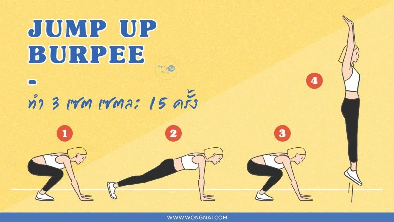
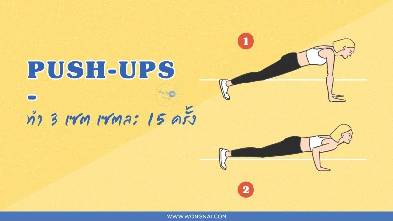
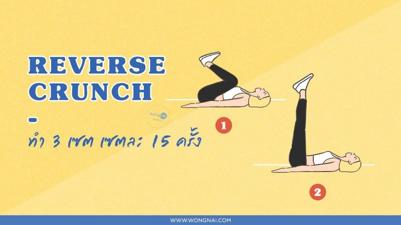
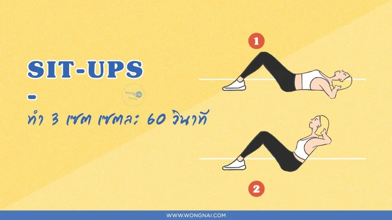
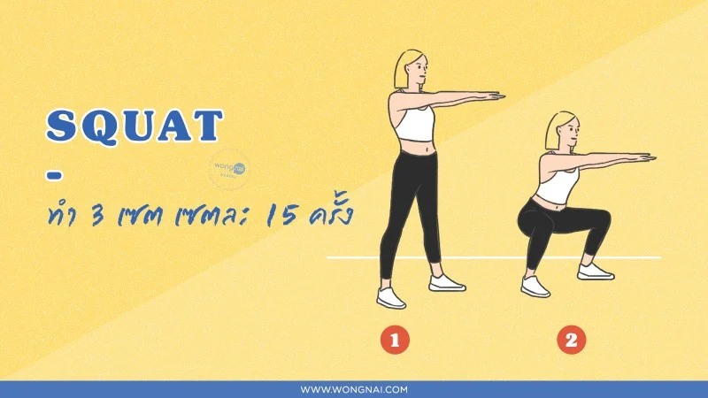

อยากหุ่นสวยฟิตแอนด์เฟิร์มไม่ยากเลยจ้า กับ 8 ท่าออกกำลังกาย ทำที่บ้านได้ง่าย ๆ 1 เดือนผอมแน่นอน !!
สวัสดีค่าสาว ๆ เชื่อว่าทุกคนคงจะอยากมีหุ่นสวยแบบคนอื่นเขาใช่มั้ยล่ะคะ แต่ถ้าไม่ชอบวิ่ง ไม่อยากออกไปปั่นจักรยาน ว่ายน้ำก็ไม่อยากทำ สาว ๆ คนไหนที่กำลังเบื่อการคาร์ดิโอแบบนี้ ยังมีท่าออกกำลังกายคาร์ดิโออีกหลายท่าที่เราสามารถทำได้ที่บ้าน แบบไม่ต้องออกไปนอกบ้านให้เหนื่อย! แต่ถ้าอยากให้การลดน้ำหนักได้ผลดียิ่งขึ้น ก็ควรใช้วิธีการควบคุมอาหารร่วมด้วยนะคะ วันนี้
 โดยเริ่มจากการยืนตัวตรง ก้าวเท้าไปข้างหน้า เปิดส้นเท้าด้านหลัง แล้วย่อตัวลง ให้หัวเข่าทำมุม 90 องศา หลังตรง ย่อแล้วยืด ทำ 3 เซต เซตละ 15 ครั้ง ไหนใครอยากจะมีหุ่นเป๊ะๆ สะโพกฟิตๆ ก็ต้องมาลองท่า Lunge เลยค่า เพราะท่านี้มีมาเพื่อสาว ๆ ที่อยากจะมีสะโพกสวยได้รูปเลย เป็นท่าบริหารโดยการย่อขา เพื่อกระชับกล้ามเนื้อต้นขาด้านหน้าและกล้ามเนื้อบริเวณสะโพก โดยไม่ใช้พื้นที่เยอะเลยค่า ทำง่ายม้ากกก
ท่านี้ช่วยในเรื่อง : กระชับบริเวณหน้าท้อง แขน และหัวไหล่
โดยเริ่มจากการยืนตัวตรง ก้าวเท้าไปข้างหน้า เปิดส้นเท้าด้านหลัง แล้วย่อตัวลง ให้หัวเข่าทำมุม 90 องศา หลังตรง ย่อแล้วยืด ทำ 3 เซต เซตละ 15 ครั้ง ไหนใครอยากจะมีหุ่นเป๊ะๆ สะโพกฟิตๆ ก็ต้องมาลองท่า Lunge เลยค่า เพราะท่านี้มีมาเพื่อสาว ๆ ที่อยากจะมีสะโพกสวยได้รูปเลย เป็นท่าบริหารโดยการย่อขา เพื่อกระชับกล้ามเนื้อต้นขาด้านหน้าและกล้ามเนื้อบริเวณสะโพก โดยไม่ใช้พื้นที่เยอะเลยค่า ทำง่ายม้ากกก
ท่านี้ช่วยในเรื่อง : กระชับกล้ามเนื้อต้นขาด้านหน้า และกล้ามเนื้อบริเวณสะโพก
ท่านี้ก็ไม่ยาก แต่เหนื่อยเอาการเลยค่ะ เริ่มด้วยท่าเริ่มในการวิดพื้น ให้ลงน้ำหนักที่มือและนิ้วโป้งทั้งสองข้าง ยืดเข่าและสะโพกให้ตรง งอเข่าทำ 90 องศากับสะโพก เหยียดขาข้างที่งอออกกลับไปในท่าเตรียมวิดพื้น แล้วสลับงอเข่าอีกข้างทำมุม 90 องศากับสะโพก ทำขาทั้งสองข้างสลับกัน ท่านี้เรียกได้ว่าบริหารกล้ามเนื้อทั่วร่างกาย และได้ประโยชน์ครบถ้วนเลยทีเดียว โดยเบื้องต้นท่านี้ใช้เป็นการสร้างความแข็งแรงของกล้ามเนื้อแกนกลางลำตัว โดยเฉพาะบริเวณหน้าท้อง และยังได้บริหารกล้ามเนื้อหน้าอก หัวไหล่ หลังแขน ต้นขา น่อง ฯลฯ ให้แข็งแรงเฟิร์มกระชับขึ้นอีกด้วยน้า
ท่านี้ช่วยในเรื่อง : กระชับบริเวณหน้าท้อง และสร้างความแข็งแรงของกล้ามเนื้อแกนกลางลำตัว
มาต่อกันที่ท่าเบสิกอย่างท่า Plank กันค่า ช่วยสร้างกล้ามเนื้อหน้าท้องได้อย่างดีเลยค่ะ วิธีการคือนอนคว่ำและเอาศอกยันพื้น ตั้งฉาก 90 องศา หรือจะใช้ฝ่ามือยัน เป็นท่าที่ใช้กำลังกล้ามเนื้อทุกส่วนของร่างกาย โดยการเกร็งและพยุงน้ำหนักตัวเราเอาไว้ โดยเฉพาะหน้าท้อง สะโพก ต้นขา และแขน ทำ 3 เซต เซตละ 30 วินาที อาจจะดูง่าย ๆ แต่รับรองเลยค่ะ ว่าถ้าได้ลองทำดูแล้วก็แอบโหดไม่ใช่เล่นอยู่นะ
ท่านี้ช่วยในเรื่อง : กระชับกล้ามเนื้อทุกส่วนของร่างกาย หน้าท้อง สะโพก ต้นขา และแขน จะกระชับเป็นพิเศษ

ท่า Push-Ups หรือท่าดันพื้น สาว ๆ อาจคิดว่ามันเป็นท่าสำหรับผู้ชายโดยเฉพาะใช่ไหมล่ะคะ บอกเลยค่ะว่าผู้หญิงอย่างเราก็สามารถทำได้เช่นกันค่ะ จัดอยู่ในท่าประเภท Bodyweight ตั้งท่าดันพื้น ค่อย ๆ ย่อลำตัวลงอย่างช้า ๆ เพื่อให้กล้ามเนื้อออกแรงฝืนได้นาน ช่วงย่อตัวลงระวังอย่าให้หลังแอ่น ลำคอและลำตัวยังคงเหยียดตรง ตลอดการฝึกด้วยท่า Push Up ให้ยกสะโพกขึ้นไม่ให้ตก เพื่อเป็นการรักษาแนวกระดูกสันหลังให้เป็นไปตามธรรมชาติ ทำ 3 เซต เซตละ 15 ครั้ง
ท่านี้ช่วยในเรื่อง : กระชับกล้ามเนื้อหลังแขน ไหล่ อก

เริ่มต้นจากการนอนหงายหน้าราบลงบนพื้น วางแขนตรงราบไปกับพื้นข้างลำตัว คว่ำมือลง วางเท้าสองข้างห่างกันเล็กน้อย ตั้งเข่าชันขึ้นมา จากนั้นยกเท้าให้ลอยสูงขึ้นจากพื้นเล็กน้อย เริ่มจากการสูดหายใจเข้าจนสุด จากนั้นออกแรงเกร็งกล้ามเนื้อหน้าท้องเพื่อดึงหัวเข่าเข้าหาหน้าอก พร้อมปล่อยลมหายใจออกจนสุด ค่อย ๆ คลายกล้ามเนื้อหน้าท้องออก ลดหัวเข่าลง เพื่อกลับสู่ท่าเตรียม พร้อมกับสูดลมหายใจเข้าจนสุด นับเป็น 1 ครั้ง ทำ 3 เซต เซตละ 15 ครั้ง ท่านี้จะช่วยกระชับหน้าท้องช่วงล่าง ยิ่งยกช้ามากเท่าไรท้องก็จะได้เกร็งมากขึ้น ปั้นหน้าท้องสวย ๆ ได้อย่างดีเลยค่า
ท่านี้ช่วยในเรื่อง : กระชับหน้าท้องช่วงล่าง แถมช่วยสร้างกล้ามหน้าท้องได้เป็นพิเศษ

ท่านี้ก็เป็นอีกท่าที่ง่ายมาก เชื่อว่าสาว ๆ หลายคนต้องเคยทำท่านี้แน่นอน เริ่มต้นจากการนอนหงายหน้าราบลงบนพื้น ตั้งเข่าชันขึ้น วางเท้าทั้งสองข้างกว้างประมาณหัวไหล่ มือทั้งสองข้างประสานไว้ที่ท้ายทอย เป็นท่าเตรียม จากนั้นให้ออกแรงเกร็งกล้ามเนื้อหน้าท้องเพื่อยกลำตัวส่วนบนขึ้นมาจนกระทั่ง ทำมุมเป็นรูปตัว V กับต้นขา ค่อย ๆ ลดลำตัวลง พร้อมกับสูดลมหายใจเข้าจนสุด นับเป็น 1 ครั้ง ทำ 3 เซต เซตละ 60 วินาที เรียกได้ว่าเป็นท่าที่เล่นง่ายและสามารถเล่นได้แทบทุกที่โดยไม่ต้องมีอุปกรณ์ก็สามารถทำได้ง่ายๆ แถมยังได้ร่างกายที่ดีอย่างง่ายดาย หากหมั่นเล่นทุกวัน โดยเฉพาะหน้าท้องที่ดูดีและแข็งแกร่งแน่นอนจ้า
ท่านี้ช่วยในเรื่อง : กระชับบริเวณหน้าท้อง

มาถึงท่าปั้นบั้นท้ายกันบ้างจ้า ท่า Squat ทำง่าย ๆ ได้ทุกวัน เน้นทั้งต้นขาด้านหลัง ต้นขาด้านหลัง กล้ามเนื้อสะโพก ก่อนอื่นยืนตัวตรงแยกขาออกจากกันกว้างประมาณช่วงไหล่ ย่อตัวลงและงอเข่าให้มากที่สุด ดันตัวเองกลับไปท่ายืนพร้อมกับเกร็งกล้ามเนื้อสะโพก นับเป็น 1 ครั้ง สำหรับผู้เริ่มต้นอาจจะงอเข่าให้ทำมุมประมาณ 45-90 องศา โดยให้น้ำหนักลงบริเวณส้นเท้า แต่สำหรับคนที่ออกกำลังกายเป็นประจำสามารถลงไปให้สุด เพื่อให้กล้ามเนื้อทำงานมากขึ้น โดยที่เข่าห้ามเลยปลายเท้าน้า
ท่านี้ช่วยในเรื่อง : กระชับบริเวณสะโพก
ขอบคุณข้อมูลจาก : https://www.wongnai.com/articles/exercise-workout-plan